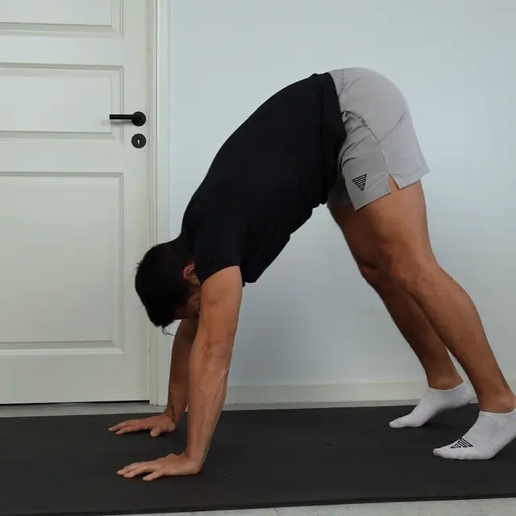
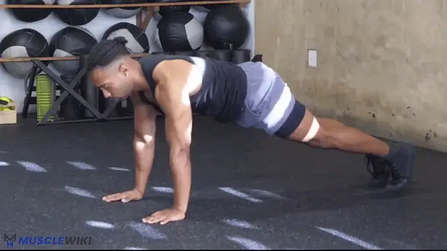
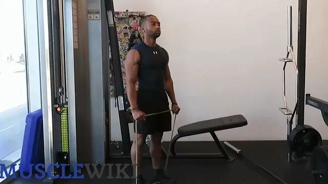
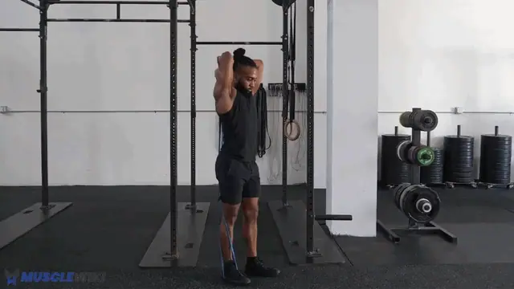
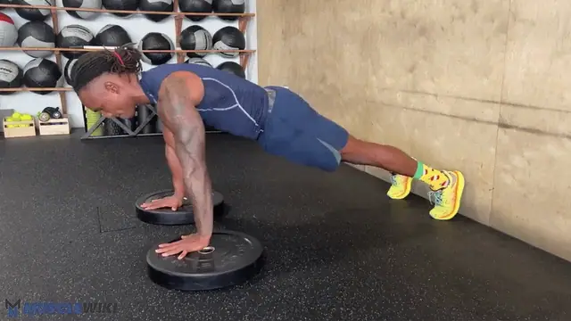
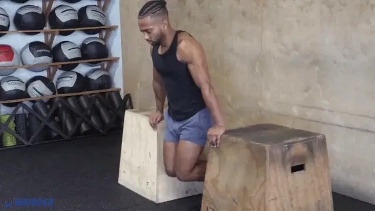

-

1 Pike Push-ups
3×8-10
Front Delts + Upper Chest + Triceps
Feel: Shoulders burning. Hips stay high the whole time.
How to
- Feet on floor, hips high (downward-dog / inverted-V)
- Hands shoulder-width, lower the top of your head toward the floor between your hands
- Push back up; the steeper the hips, the more shoulder-dominant
Key cue: If hips drop, it becomes a regular push-up. Keep them stacked high. A wider foot stance makes it easier; feet on a low step (Phase 2) makes it harder.
-

2 Push-ups (loaded)
3×10-15, 3s eccentric
Chest (mid) + Front Delts + Triceps
Feel: Chest and front shoulder working; controlled, not rushed.
How to
- Shoulder-width hands, elbows ~45° to the torso (don't flare to 90°)
- Lower until chest nearly touches floor — 3 seconds down — then press up with full lockout
- Protract the shoulders at the top (push the floor away — hits serratus)
Notes
You can do 20 fresh, so add load, not reps: the 3s eccentric is step one. When 3×15 slow reps feel easy, add a loaded backpack (5–10 kg of books/water). That's the cleanest way to keep progressing — chasing 30+ reps just trains endurance.
-

3 Lean-in Lateral Raises
3×12-15
Lateral Delts (isolation)
Feel: Burn on the outside of the shoulder from ~rep 10.
How to (lean-in, per Jeff Nippard)
- Hold a support (doorframe / TS900 upright) with one hand and lean your torso away from the working arm
- Working arm hangs slightly across the body at the bottom → this loads the side delt in the stretched position
- Raise the dumbbell out to just above shoulder height, slight elbow bend, control the descent
- Switch sides. Use the 3 kg dumbbells.
Notes
Why lean-in: leaning increases tension at the bottom (lengthened position) where the standard upright raise gives almost none. Good choice keeping these.
-

4 Overhead Triceps Extension (dumbbell)
3×12-15
Triceps — Long Head (stretched position)
Feel: Deep stretch in the back of the upper arm at the bottom, contraction overhead.
How to
- Hold one 3 kg dumbbell with both hands behind your head, elbows pointing up
- Extend arms to straight overhead, then lower slowly — feel the stretch
- Keep elbows pointing forward/up, not flaring out
Notes
Now that you're on dumbbells (not the band): gravity loads the stretched position correctly — this is the better setup. When 3×15 feels easy, slow the eccentric to 4s before adding weight.
-

1 Deficit Push-ups
3×8-12, 1–2s pause at bottom
Chest (stretch-focused) + Front Delts
Feel: Deep chest stretch at the bottom, below hand level.
How to
- Hands on two low stacks of books / parallettes (~10 cm)
- Lower so your chest drops below your hands → loaded stretch
- Pause 1–2s at the bottom, then press up
Notes
This replaced wide push-ups. Wide push-ups were "hard" mostly from awkward leverage, not better chest work. Deficit push-ups load the chest in the lengthened position (where most growth happens) and you control the depth. Raise the stacks over time for more range.
-
2 Pike Push-ups
3×8-10
Front Delts + Upper Chest + Triceps
Feel: Shoulders burning. Hips stay high the whole time.
How to
- Feet on floor, hips high (downward-dog / inverted-V)
- Hands shoulder-width, lower the top of your head toward the floor between your hands
- Push back up; the steeper the hips, the more shoulder-dominant
Key cue: If hips drop, it becomes a regular push-up. Keep them stacked high. A wider foot stance makes it easier; feet on a low step (Phase 2) makes it harder.
Notes
Same as Push 1 — see above. Keeps shoulder frequency at 2×/week.
-
3 Lean-in Lateral Raises
3×12-15
Lateral Delts (isolation)
Feel: Burn on the outside of the shoulder from ~rep 10.
How to (lean-in, per Jeff Nippard)
- Hold a support (doorframe / TS900 upright) with one hand and lean your torso away from the working arm
- Working arm hangs slightly across the body at the bottom → this loads the side delt in the stretched position
- Raise the dumbbell out to just above shoulder height, slight elbow bend, control the descent
- Switch sides. Use the 3 kg dumbbells.
Notes
Same as Push 1 — see above. Side delts get zero from pressing, so they're trained both days.
-

4 Dips (on TS900)
3×6-10
Chest (lower) + Triceps (compound) — NEW with the power tower
Feel: Chest and triceps under a big stretch at the bottom; strong push to lock out.
How to
- Grip the TS900 dip handles, support yourself with arms straight
- Lower until upper arms are ~parallel to the floor (or to a comfortable shoulder stretch)
- Lean the torso forward = more chest; stay upright = more triceps
- Press back up to lockout. Control the descent.
Notes
Start conservative: dips are demanding. Use a small range first and only go as deep as your shoulders comfortably allow; build range over weeks. 6 clean reps is a fine starting point. Optional finisher if you have gas left: diamond push-ups, 1× to failure.
About push workout
Two short push sessions per week. Pike push-ups and lean-in lateral raises appear both days (anchors — track these). Push 1 leans vertical-press + triceps long head; Push 2 leans chest-stretch + dips. Splitting the volume means you hit each pressing variation fresh, instead of grinding through 6 push movements in one session (the old problem where wide push-ups landed when you were already cooked).
Time Breakdown
Push 1
| # | Exercise | Sets × Reps | Rest | Time |
|---|---|---|---|---|
| 1 | Pike push-ups | 3×8-10 | 90s | ~5 min |
| 2 | Push-ups (loaded, 3s ecc) | 3×10-15 | 90s | ~5 min |
| 3 | Lean-in lateral raises | 3×12-15 | 60s | ~4.5 min |
| 4 | Overhead triceps ext | 3×12-15 | 60s | ~4.5 min |
| — | Total | ~19 min |
Push 2
| # | Exercise | Sets × Reps | Rest | Time |
|---|---|---|---|---|
| 1 | Deficit push-ups (paused) | 3×8-12 | 90s | ~5 min |
| 2 | Pike push-ups | 3×8-10 | 90s | ~5 min |
| 3 | Lean-in lateral raises | 3×12-15 | 60s | ~4.5 min |
| 4 | Dips | 3×6-10 | 60s | ~5.5 min |
| — | Total | ~20 min |
Progression Roadmap
| Exercise | Now | Next | Later |
|---|---|---|---|
| Pike push-ups | Floor, 3×8-10 | Feet on a low step | Wall handstand push-ups (partial) |
| Push-ups (loaded) | 3s eccentric | Loaded backpack 5–10 kg | Deficit + backpack / archer push-ups |
| Deficit push-ups | Books ~10 cm, paused | Deeper deficit / between two chairs | Weighted (backpack) |
| Lean-in lateral raises | 3 kg | Heavier dumbbells (5–8 kg) | — |
| Overhead triceps ext | 3 kg, 4s eccentric | Heavier dumbbell | — |
| Dips | Partial ROM, 3×6-10 | Full ROM, 3×10 | Weighted (backpack / vest) |
Quick Reference
Chest (mid) → Push-ups (loaded) → backpack
Chest (stretch) → Deficit push-ups → Dips (forward lean)
Shoulders → Pike push-ups → feet elevated → handstand
Lateral delts → Lean-in lateral raises (both days — don't skip)
Triceps (long) → Overhead extension
Triceps (compound) → Dips (upright) (+ diamond push-up finisher)
Garmin Connect Setup
Garmin Connect Setup
Synced to Garmin Connect with uv run garmin/sync.py push. Exercise names match the cards above; each one's Garmin exercise is in garmin/exercises.yaml, and the watch notes are built from the card's dose and cues.
Push 1
| Step | Exercise | Target | Rest |
|---|---|---|---|
| Repeat ×3 | Pike Push-ups | 8 | 90s |
| Repeat ×3 | Push-ups (loaded) | 12 | 90s |
| Repeat ×3 | Lean-in Lateral Raises | 12 | 60s |
| Repeat ×3 | Overhead Triceps Extension (dumbbell) | 12 | 60s |
Push 2
| Step | Exercise | Target | Rest |
|---|---|---|---|
| Repeat ×3 | Deficit Push-ups | 8 | 90s |
| Repeat ×3 | Pike Push-ups | 8 | 90s |
| Repeat ×3 | Lean-in Lateral Raises | 15 | 60s |
| Repeat ×3 | Dips (on TS900) | 6 | 60s |